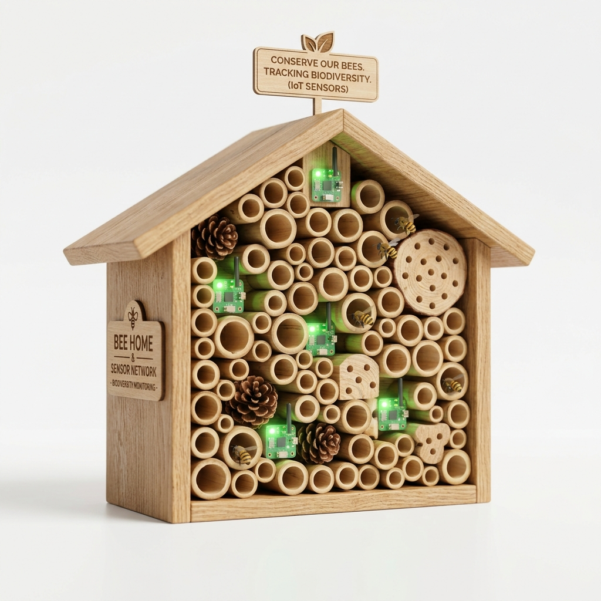
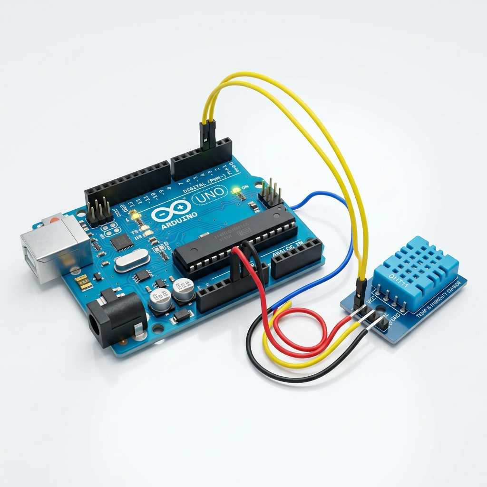
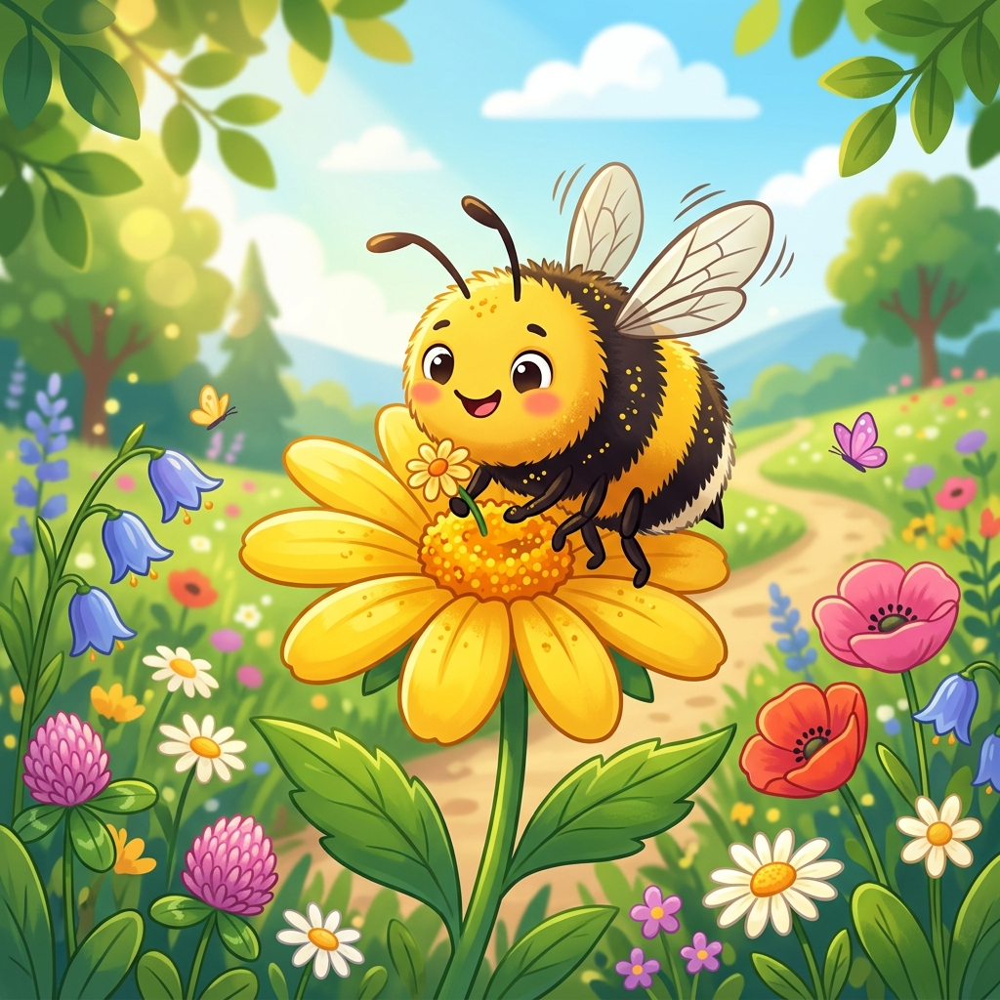

Evolución tecnológica para la protección de polinizadores. Transformamos un refugio ecológico tradicional en una estación de monitoreo inteligente con sensores IoT para cuidar a nuestras abejas nativas sin aguijón.

Es una estación científica escolar diseñada para brindar refugio y estudiar el microclima que prefieren las abejas nativas solitarias y las abejas meliponas (sin aguijón).
Los hoteles de abejas tradicionales son simples estructuras de madera con agujeros y cañas. Aunque son útiles para brindarles un hogar seguro, **no nos permiten saber cómo se sienten las abejas por dentro**.
Nuestra evolución consiste en integrar un **cerebro electrónico (Arduino Uno)** y un **sensor de alta precisión (DHT11)** para registrar constantemente la temperatura y humedad interna de los túneles de anidación. Esto nos permite saber en qué condiciones prefieren reproducirse y cómo el cambio climático afecta su bienestar cotidiano.
Estructura de madera recuperada y cañas de bambú que replican sus nidos naturales.
El sensor DHT11 monitorea el clima interno sin perturbar ni estresar a los insectos.
Los datos recolectados se analizan en clase para aplicar matemáticas, física e informática.
Las abejas no solo hacen miel; son los motores invisibles que sostienen la biodiversidad y la alimentación de todo nuestro planeta.
Más del 75% de los cultivos alimenticios del mundo y el 90% de las plantas silvestres con flor dependen directamente de la polinización para reproducirse.
El uso desmedido de pesticidas químicos, la deforestación urbana y el avance de la agricultura intensiva están destruyendo sus hábitats naturales a pasos acelerados.
Las variaciones extremas de temperatura perturban sus ciclos de vuelo, disminuyen la floración y afectan la incubación de las nuevas abejas en el interior de los nidos.
El camino que recorrimos desde una idea básica de conservación natural hasta una estación de tecnología ambiental integrada.
Diseño y construcción artesanal de un hotel de abejas utilizando troncos perforados y bloques de arcilla. El objetivo era brindar refugio a polinizadores urbanos, pero la observación se hacía visualmente una vez por semana sin herramientas de medición interna.
Implementación del sensor DHT11 en el interior del hotel conectado a un microcontrolador Arduino. Creación de un panel web (Dashboard) para visualizar en tiempo real gráficos climáticos, automatizar alertas ambientales y aplicar estadística descriptiva.
Una mirada comparativa a cómo la tecnología transformó el alcance de nuestro proyecto científico.
Estaba limitado a la habitabilidad pasiva. Las principales falencias eran:
Equipado con monitoreo microclimático inteligente en tiempo real:
El recorrido de la información desde el sensor dentro del hotel hasta la pantalla de monitoreo.
El sensor DHT11 mide la temperatura y humedad dentro del bloque de anidación.
El Arduino Uno recibe las señales analógicas del sensor y las convierte en valores digitales.
Los datos se transmiten al Dashboard Web en tiempo real, generando gráficos interactivos.
El sistema genera alertas y recomendaciones para el cuidado del nido escolar.
El conjunto de hardware, software y elementos ecológicos que interactúan armoniosamente.
Construido con madera de pino recuperada y cañas naturales de bambú cortadas a diferentes diámetros (de 4 a 10 mm) para atraer a distintas especies de abejas solitarias de la región.
Bambú y MaderaSensor digital encargado de medir la temperatura (rango de 0 a 50°C, error ±2°C) y la humedad relativa (rango de 20 a 90%, error ±5%) del aire en el núcleo del hotel.
Pin Digital D2Microcontrolador programado en lenguaje C++. Se encarga de energizar el sensor, programar la frecuencia de muestreo (cada 5 minutos) y enviar los datos formateados vía puerto serial.
Frecuencia 9600 BaudiosInterfaz de monitoreo interactiva con medidores dinámicos, gráficos históricos temporales y un sistema inteligente de avisos ambientales para estudiantes e investigadores.
HTML / Vanilla CSS / JSModulo lógico integrado que calcula de forma automática promedios (media aritmética), valores mínimos, máximos y rangos microclimáticos para facilitar el análisis matemático escolar.
Cálculos en tiempo realMapa geolocalizado interactivo desarrollado con Leaflet.js que muestra las condiciones climáticas del hotel comparadas con zonas de alta y baja presencia floral en Tuluá.
Geolocalización GPSA continuación puedes ver un simulador interactivo de la tabla de registros climáticos que recopila nuestro Arduino de acuerdo a diferentes condiciones de prueba en Tuluá.
| Hora Registro | Temperatura (°C) | Humedad Relativa (%) | Presión Estimada (hPa) | Estado Alerta | Acción Ecológica Recomendada |
|---|
*Los datos se capturan automáticamente cada 5 minutos a través del puerto Serial RX del microcontrolador.
¿Cómo utilizamos las matemáticas en nuestro proyecto? Aprendemos a interpretar datos reales mediante conceptos estadísticos aplicados al medio ambiente.
Tomar una sola medida climática al día puede ser engañoso, ya que el clima en Tuluá cambia constantemente. Por eso, programamos el sensor para tomar **288 muestras diarias** (una cada 5 minutos).
Aplicamos conceptos matemáticos clave:
Con estos datos comprobamos si la estructura de madera realmente sirve de amortiguador térmico contra el calor exterior.
Frecuencia de lectura automática del sensor para análisis estadístico preciso.
Temperatura promedio óptima en la que se observa mayor entrada de abejas.
La madera reduce las variaciones extremas del exterior en casi una tercera parte.
El sistema no solo muestra números; traduce los datos climáticos en estados ecológicos comprensibles para tomar decisiones rápidas de cuidado.
El rango microclimático perfecto. Las abejas nativas vuelan activamente en búsqueda de polen, y los huevos en los túneles se incuban de manera segura.
Mantener las actividades normales de observación. Asegurar que las flores del jardín escolar tengan agua disponible.
Condiciones secas o cálidas. Las abejas reducen la salida del nido y dedican esfuerzos a ventilar los túneles aleteando en la entrada.
Verificar que la estación esté a la sombra. Rociar agua en los alrededores (no en el hotel) para enfriar el entorno.
Estrés térmico severo o humedad excesiva. Riesgo de muerte de larvas por calor o aparición de hongos letales debido a humedad extrema.
Intervención inmediata. Reubicar el hotel provisionalmente o colocar una cubierta protectora contra el sol/lluvia directa.
Ubicación GPS de nuestro Bee Hotel escolar e información sobre los principales ecosistemas florales y zonas de interés de nuestra ciudad.
¿Por qué este proyecto es importante? Integra múltiples disciplinas de ciencia y tecnología para inspirar la protección activa de la fauna colombiana.
La educación tradicional suele separar las matemáticas de la naturaleza. En este proyecto demostramos que las ciencias exactas son el lenguaje que nos permite entender el medio ambiente.
Al construir y programar el **Bee Hotel Smart System**, los estudiantes no memorizan conceptos abstractos: ven cómo la física de la temperatura y la programación en Arduino resuelven una necesidad real del ecosistema local de Tuluá.
Fomentamos una cultura científica donde el cuidado planetario es apoyado por el rigor del análisis de datos y la ingeniería electrónica.
Estudio de la biología, ciclos de reproducción y ecosistema de las abejas.
Conexión de sensores analógicos, Arduino y visualización web.
Diseño y aislamiento térmico de la estructura de madera del hotel.
Cálculo de medias estadísticas y muestreo cuantitativo continuo.
Las conclusiones más importantes que se lleva nuestro equipo de estudiantes de Grado 8° durante la feria científica.
Las abejas urbanas están desamparadas sin corredores florales adecuados. Los hoteles les permiten colonizar espacios cementados en la ciudad.
Gracias a microcontroladores como Arduino, es económico crear instrumentos de precisión científica escolar para cuidar nuestro entorno.
Descubrimos que en el Valle del Cauca habitan abejas angelitas hermosas y sin aguijón. No debemos temerles, debemos conservarlas.
Los datos son números sin valor hasta que aplicamos la estadística descriptiva para entender si el nido está en riesgo climático.
Nuestras metas de impacto ambiental y educativo para las siguientes fases del Bee Hotel Smart System.
Lograr que al menos 10 nidos en cañas de bambú se consoliden en la primera temporada escolar de anidamiento.
Integrar un pequeño panel solar al Arduino para hacer que la estación smart sea completamente auto-sostenible en energía.
Inspirar a otras instituciones de Tuluá a construir su propia versión y compartir datos microclimáticos abiertos en una red común.
Registro visual de las etapas de construcción, los sensores electrónicos y los valiosos polinizadores nativos que protegemos.


El Bee Hotel Smart System es solo el comienzo. Tú también puedes ayudar cultivando plantas con flores nativas en tu casa, evitando el uso de pesticidas y construyendo pequeños refugios ecológicos en tu jardín. ¡Cuidemos juntos de la biodiversidad de Tuluá!